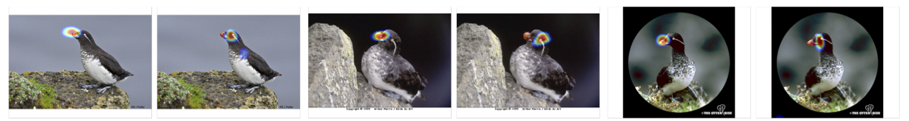
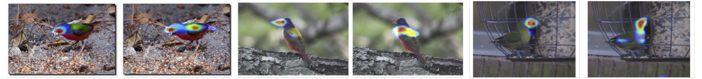
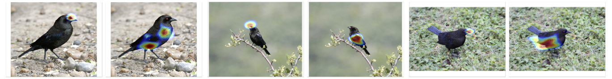
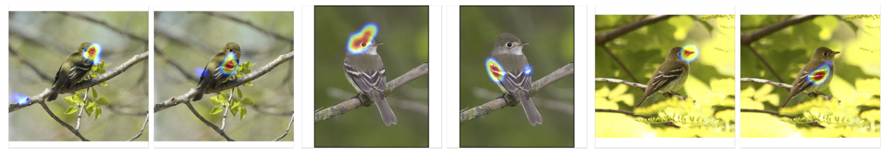
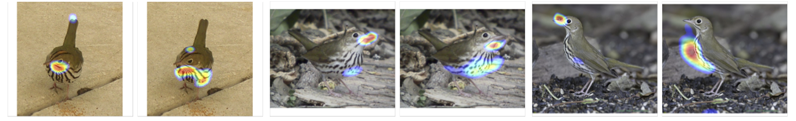

Deep Co-occurrence Feature Learning for Visual Object Recognition
Ya-Fang Shih∗, Yang-Ming Yeh∗, Yen-Yu Lin,
Ming-Fang Weng, Yi-Chang Lu, and Yung-Yu Chuang
Abstract
This paper addresses three issues in integrating part-based representations into convolutional neural networks (CNNs) for object recognition. First, most part-based models rely on a few pre-specified object parts. However, the optimal object parts for recognition often vary from category to category. Second, acquiring training data with part-level annotation is labor-intensive. Third, modeling spatial relationships between parts in CNNs often involves an exhaustive search of part templates over multiple network streams.
We tackle the three issues by introducing a new network layer, called co-occurrence layer. It can extend a convolutional layer to encode the co-occurrence between the visual parts detected by the numerous neurons, instead of a few pre-specified parts. To this end, the feature maps serve as both filters and images, and mutual correlation filtering is conducted between them. The co-occurrence layer is end-to-end trainable. The resultant co-occurrence features are rotation- and translation-invariant, and are robust to object deformation.
By applying this new layer to the VGG-16 and ResNet-152, we achieve the recognition rates of 83.6% and 85.8% on the Caltech-UCSD bird benchmark, respectively.
Paper
Citation
| @inproceeding{ | Deepcooc, |
| title = {Deep Co-occurrence Feature Learning for Visual Object Recognition}, | |
| author = {Shih, Ya-Fang and Yeh, Yang-Ming and Lin, Yen-Yu and Weng, Ming-Fang and Lu, Yi-Chang and Chuang, Yung-Yu}, | |
| booktitle = {IEEE Conferene on Computer Vision and Pattern Recognition}, | |
| year = {2017} | |
| } |
Code
The codes for reproducing the result of ResNet-152 + 3 co-occurrence layers (accuracy: 85.8%) will be available at github.
Github
Result on Caltech-UCSD
| network | feature dimension | accuracy |
|---|---|---|
| VGG-16 | 4.9k | 70.4% |
| VGG-16 feature concat VGG-16 + 3 co-occurrence layers | 54.1k | 83.6% |
| ResNet-152 | 2.0k | 73.3% |
| ResNet-152 + 3 co-occurrence layers | 49.2k | 85.8% |
Visualization
Visualization of five co-occurrence features, each in a row, that are the most influential for bird species parakeet auklet, painted bunting, bronzed cowbird, least flycatcher, and ovenbird, respectively. The co-occurrence features can detect object parts robustly against variations of poses and viewpoints
    